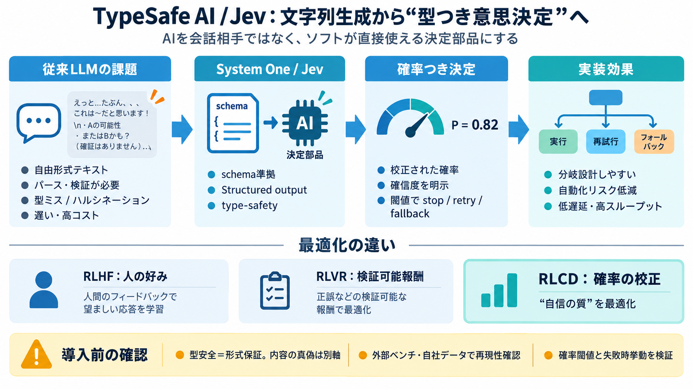

Enterprise LLM Comparison 2026: Right Model for Every Use Case
The performance gap between the top four models has narrowed significantly since 2024. On MMLU-Pro, Gemini 3.1 Pro leads…

AIを“会話”ではなく、ソフトがそのまま使える「意思決定の部品」にする――TypeSafe AIはSystem One Modelsと最初のモデルJevを発表しました。
従来のLLMは自由な文字列を出すため、パース・検証・型ミス対応が必要になりがちです。結果として「遅い」「高コスト」「確信度が不安定」「誤情報（ハルシネーション）や型ミス」が課題になります。
System One Modelsは、速く・構造化された決定を出し、ソフトが直接扱える形で提供することを狙うクラスです。Jevは「事前定義された型（スキーマ）に従う構造化出力」を行います。
Jevは各判断に「エピステミックに正直な確率（キャリブレーションされた確率）」と確信度を付けると主張します。LLMが過信しがちな点に対し、ソフト側の分岐（再問い合わせ・フォールバック・停止）に使える状態を提供する狙いです。
Jevは、トークン逐次生成で遅くなりがちな従来LLMと対照的に、確率を一括生成する方向性を示しています。さらに学習目標としてRLCD（Reinforcement Learning for Calibrated Decisions）を用い、キャリブレーションされた決定を最適化します。
Jevは競合的なRL設計の枠組みに触れつつ、差別化として「キャリブレーションされた決定」を最適化する点を強調しています。RLHF（人の好み）やRLVR（検証可能な報酬）に対し、失敗可能性を扱う設計思想が中心です。
Jevは単なるチャットではなく、条件分岐・検証・ガードレール込みの実装を前提にした用途が想定されています。100ms級のリアルタイムや、数学のように検証が安い問題も挙げられています。
最重要の狙いは、自由度の高い文字列出力を避け、事前定義された構造化出力に限定することです。これにより、誤形式・ツール呼び出し破綻・検証不能を減らし、自動化に適した依存関係を作るとしています。
本文には“can't hallucinate（ハルシネートしない）”など強い断言がありますが、第三者ベンチマークでの全面検証までは読み取れません。型に合うこと（type-safe）と、内容の真偽が常に正しいことは別問題になり得ます。
速度・コスト・型安全性に関する強い主張がある一方、測定条件（ロケーション等）や価格の長期持続性は、本文のみによる確定が難しいと注記されています。workflow evalsの参照モデル選定など、バイアス可能性も明示されています。
Jevは「形式（型）」「不確実性（キャリブレーション確率）」「高速意思決定」を一体にして、ソフトの自動化実装コストと運用リスクを下げる方向性を示します。うまくハマれば、分岐・停止・再試行まで含む堅牢な設計がしやすくなります。
この宣言から読み取れる価値は大きい一方、保証の範囲は追加情報に依存します。導入前に「失敗モード」「外部ベンチ」「自社データでの再現性」「確率の実挙動」を確認しましょう。
The performance gap between the top four models has narrowed significantly since 2024. On MMLU-Pro, Gemini 3.1 Pro leads…
Larger context windows are relevant to RAG (Retrieval Augmented Generation) LLM workflows which typically involve reason…
[11:43] And that that is, by the way, I I think that's super accurate. That is vibe coding but that is not AI field codi…
Recent research highlights that the integration of LLMs into software engineering has significantly advanced code genera…
### 6.4. Manufacturing and Supply Chain LLMs optimize complex engineering and logistics systems: Forecasting and Opti…